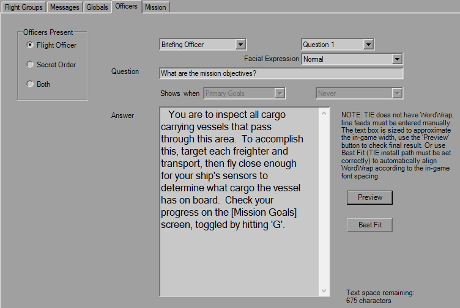
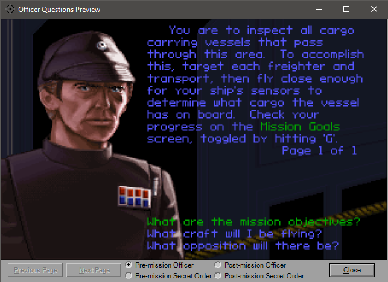

Briefing Officers

This tab controls who is present both before and after the mission. You have the simple Officers Present selection to start. Each question set is five per officer, both before and after. Use the drop-downs to select the question you wish to edit. The strings have no practical length limit, as I doubt anyone could take up over 65,000 characters.
The interface behaves as it would in game: click the question to display the question how it should appear in-game, click "Page # of #" to flip forward or use the 'Previous/Next Page' buttons at the bottom. No edits can be performed in this interface, it is simply to double-check that you're not running off the screen. Sometimes an extra empty page will be shown, although it's not there in-game.